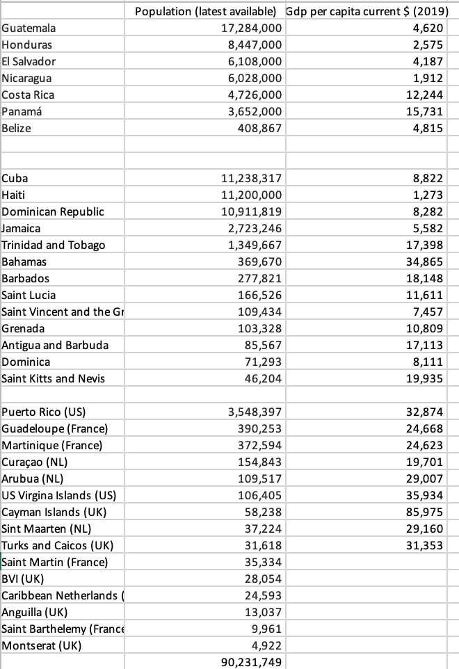
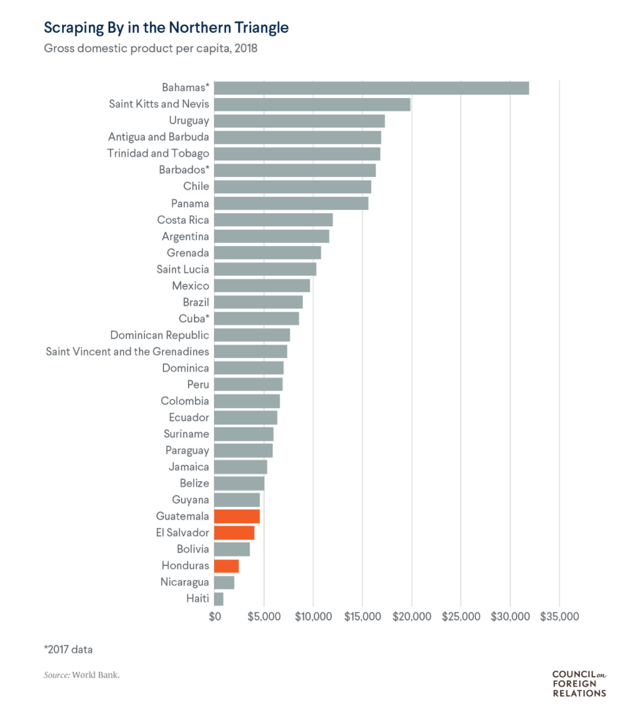

10 Development
10.1 Progress vs Development
Our most important gains in social progress — toward democracy, labour rights, civil rights, gender equality, public services, etc — have been won through collective resistance against the forces of capital accumulation, not spontaneously bequeathed by them. (Jason Hickel)
10.2 History of Development
The high consumption rate of developed economies has historical reasons; once you switch, there’s no going back, so we should not take them as an example to learn from. (People’s Bank of China)
10.3 Portugal: Lithium Ore
(see ngy)
10.4 Sierra Leone: Chinese Trawler Port
A $55m (£39m) deal struck by the government of Sierra Leone with China to build an industrial fishing harbour on 100 hectares (250 acres) of beach and protected rainforest has been criticised as “a catastrophic human and ecological disaster” by conservationists, landowners and rights groups.
The gold and black sands of Black Johnson beach fringe the African nation’s Western Area Peninsula national park, home to endangered species including the duiker antelope and pangolins. The waters are rich in sardines, barracuda and grouper, caught by local fishermen who produce 70% of the fish for the domestic market.
10.5 Norway: Motvind
(see de)
10.6 Latin America
Tooze
The region might be better able to cope, if shocks could be absorbed through common resources, or pools of credit. If you lump all the islands of the Caribbean and the Central American zone from Panama to Belize together, you have a substantial bloc with a combined GDP of over $400 billion and a population of 90 million. But this unit exists only in the mind of management consultants and statisticians. In actual fact, 90 million people are spread across a fragmented collection of 35 nations and territories.

The region is a shatter zone of empire, settler colonialism, mono-cropping plantation agriculture, resource extraction and former slave-based economics, imperialism and national liberation struggles. It is an arena of combined and uneven development in extreme form. Burned-out experiments in economic nationalism, socialism on one island and colonial hangovers, oligarchic tax havens, petrochemical complexes, gated tourist resorts, maquiladora manufacturing zones, peasant agriculture exist side by side. Integrated into a single unit, they might form a diversified regional economy. Instead, they are thrown together in a Balkanized patchwork. The region, one is tempted to say, consists of a collection of overlapping “peripheries”.
Brazilianization
American Affairs published a brilliant essay by Alex Hochuli proposing that readers in the West should recognize the “Brazilianization” of “the world”. The essay should be widely read. It paints a compelling picture of a world discovering that it is “modern but not modern enough”.
Since the late 1990s as the global growth rate was lifted by the dramatic acceleration of Asia, Brazil has found itself falling behind. Brazil’s recession that began in 2014 was exceptionally severe.
“Welcome to Brazil. Here the only people satisfied with their situation are financial elites and venal politicians. Everyone complains, but everyone shrugs their shoulders. This slow degradation of society is not so much a runaway train, but more of a jittery rollercoaster, occasionally holding out promise of ascent, yet never breaking free from the tracks. We always come back to where we started, shaken and disoriented, haunted by what might have been. … Brazil consequently finds itself stuck—caught in the perennial fluctuation between hope and frustration. And the fate of being modern but not modern enough now seems to be shared by large parts of the world:”
Since 1987 the overall growth record of Latin America and the Caribbean has, indeed, been disappointing. On average it has been worse than that of sub-Saharan Africa. Given their low starting point, African countries still lags far behind. But Latin America has been comprehensively outgrown by South Asia and East Asia.

Only three countries in the region - Costa Rica, the Dominican Republic, and Panama - with just over 20 percent of the region’s population between them, have been able to sustain rapid growth over a thirty year period. Each occupies a clear niche.
Costa Rica has a highly educated population. It is the main destination for foreign direct investment in business-support services in Latin America. It has a fast-growing medical-device-manufacturing sector that generated $4 billion in exports in 2018. Costa Rica has a booming eco tourism business.
The Dominican Republic which was once primarily a low-coast manufacturing center, now boasts the second-largest tourist economy in Latin America. It draws in FDI on a large scale and has set itself the objective of achieving high-income status by 2030.
Panama’s economy centers on the canal and the financial center clustered around it. The logistics industry in Panama accounts for 19 percent of the world total in dead-weight tonnage.
Honduras, has become a major garment production center, being the leading exporter of T-shirts to the United States. Honduras and Nicaragua have developed a specialization in the export of wiring-harnesses for global auto manufacturers
These patterns of growth are fragile and utterly dependent on external demand and foreign finance.
Brazil was not immune to the storms in global financial markets in 2020. But its foreign exchange reserve of over 350 billion dollars gives it a real measure of autonomy. For all the pressure on the real, Brazil was free to mount a large fiscal response to the crisis. And Brazil’s elite can count on powerful support from the outside. In 2020, as in 2008, Brazil was provided with a dollar swap line from the Fed. Amongst “emerging markets”, only South Korea, and Mexico were in the same position. Indonesia was rebuffed.
Apart from dollar support, a major source of domestic resilience for Brazilian finances is the fact that domestic capital markets are deep. Most of Brazil’s public debt is owed to domestic creditors. The share of domestically held debt for the Central American countries was half that of Brazil. In the crisis they were forced to turn to the IMF and the World Bank.
Tooze (2021) The Caribbean, Central America and the “Brazilianization” thesis
10.7 Modernization
Modernization theory, with all its blindspots, is a hard habit to break. But, if our aim is not to use “the world” as a foil onto which to project national dramas, but to actually think about it, we will be better served not by defining norms, whether they be Western Europe, the US or Brazil, whilst relegating China, for instance, to the category of exceptional Sonderweg. It is the process of uneven and combined development itself, the generator of similarity and difference that we should be focusing on.
Tooze (2021) The Caribbean, Central America and the “Brazilianization” thesis
10.8 Brazilianization
Hochuli
Covid-19 has disguised state failure in the very heartlands of global capitalism.
We all seemingly live in “less-developed countries” now.
Hollowed-out state capacities, politi-cal confusion, cronyism, conspir-atorial thinking, and trust deficits have expose
d the crumbling legiti-macy that now makes rich and powerful states look like banana republics.
The twentieth century—with its confident state machines, forged in war, applying themselves to determine social outcome
s—is over.
So are its other features: organized political con-flict between Left and Right, or between social democracy and Christ
ian democracy; competition between universalist and secular forces leading to cultural modernization; the integration o
f the labor-ing masses into the nation through formal, reasonably paid employment; and rapid and shared growth.
If liberalism was a set of ideas appropriate to the bourgeoisie’s rise and then consolidation—all in the name of freedo
m—it is today in a state of deaptation, wielded in defense of hierarchy and domination.
The new global elite is entirely désembourgeoisée; there are no fixed and hard rules, everything is up for negotiation.
Morality is at most an individual, subjective matter, if not a cause for embarrassment; the elite prefer the empty avo
wals of corporate ethics nowadays, not moral pronouncements. Morality is no longer the keystone of pater-nal, social au
thority. The postmodern elite feels no responsibility. It has not internalized the law, and thus feels no guilt.
The hustler is a generic type, “unobtrusively inserting himself into social situations or in spinning about him a web o
f deceitful relations, just so that he may derive some more or less extorted profit from them.” (The opposite to the hu
stler is formal wage labor, taken to be “legal, recognized, regular and regulated.”14) This attitude is no longer restr
icted to the ghetto, but becomes the ideal subjectivity of the neoliberal “entrepreneur of the self.”
Brazilianization represents a doomed future, not just of social exclusion and savage capitalism, but also the end of th
e state’s monopoly on violence, the emergence of powerful non-state actors, criminal gangs, etc.
The Panama Papers were of course met with a collective shrug; nothing changed. But what are you gonna do? Is this not precisely a very Brazilian “corrosive tolerance”?
In Brazil, the same ruling class that profited from colonialism, slavery, and the latifundiary system was also the one that backed the 1964 coup so as to prevent workers from gaining any more of a foothold in society, an act that thereby also stopped the country’s chance at national autonomy. Elites preferred dependency and submission to international capital and to the United States. As a result, they also missed what may have been the last entry ramp to catch-up development.
The European Union. The regional bloc is best understood as an “economic constitution” which is devised to prevent politics from interfering with market regulation, thus locking in policy choices. When national elites opt for membership in the bloc—in spite of the EU’s neoliberal death spiral—they trade away national autonomy and with it political responsibility for social outcomes.
If colonial Brazil, a society based around naked economic extraction, was at the vanguard of capitalism, contemporary Brazil is now at the vanguard of the crisis of modernity. Brazilianization is not the act of becoming backward. Nor is it the importation of something foreign. Rather, Brazil merely expressed earlier the forms and tendencies of social development that are immanent to the social world of rich countries.
The truly doom-laden future that Brazil has in store for us is the collapse of state authority.
Modernization everywhere meant the destruction of old feudal vestiges in the countryside, urbanization, and the incorporation of the masses through formalized work in an industrializing society. This process would generalize wealth and citizenship—or at least, it would form an urban proletariat who would fight for these rights, gaining concessions and thereby disciplining elites. It would root out patrimonial and clientelist relationships. Politics would become more regularized, ordered along ideological lines, with salutary effects on the state and its bureaucracy—at least in the most advanced countries.
The undoing of modernization through its principal process—the coming apart of formal employment and of the rise of precaritization—is the root of the whole phenomenon of “Brazilianization”: growing inequality, oligarchy, the privatization of wealth and social space, and a declining middle class. Its spatial, urban dimension is its most visible manifestation, with the development of gentrified city centers and the excluded pushed to the periphery.
n political terms, Brazilianization means patrimonialism, clientelism, and corruption. Rather than see these as aberrations, we should understand them as the normal state of politics when widely shared economic progress is not available, and the socialist Left cannot act as a countervailing force. It was the industrial proletariat and socialist politics that kept liberalism honest, and prevented elites from instrumentalizing the state for their own interests.
Neo-feudalism comes into view, with its four interlocking features, which bear resemblance to Brazilianization: parceled sovereignty, new lords and peasants, hinterlandization, and catastrophism.
Alex Hochuli (2021) Brazilianization
Ulrich Beck
The first age of modernity was distinguished by its securities, its certainties, its clear boundaries; the second is distinguished by its insecurities, its uncertainties, its dissolution of boundaries. In this second age of modernity, every field - the economy, society and politics - is governed by the risk regime
Everything is possible and consequently nothing can be predicted and controlled. In this world of global risks the Fordist regime of standardised mass production on the basis of an inflexible, segmented, hierarchical division of labour becomes a decisive impediment to the utilisation of capital. Where demand is unpredictable, both in quantity and quality, where markets have diversified worldwide and are therefore uncontrollable, where information technologies simultaneously make possible new kinds of decentralised and global production, then the bases of standardised production and work, as formulated in Frederick Taylor’s “scientific management” (and adopted by Lenin for the Soviet philosophy and organisation of work) are no longer applicable.
Rises in productivity require flexibility in all dimensions: work time, place of work and work contract. So the risk regime, and precarious employment, encompass and transform ever larger parts of work and living conditions. This occurs not only in low-skill employment but also in jobs demanding high qualifications. Indeed, the category of workers who can be called “permanently temporary” is growing fastest in the information economy.
This revolution in the labour market replaces the orderly world of Fordism and Taylorism with a political economy of uncertainty whose social and political implications are still unclear. We have a new power game between territorially fixed actors - labour, governments, parliaments and trade unions - and non-territorially bounded actors - capital, financial and commercial forces. Capital has become global, while labour remains local. The nation state’s room for manoeuvre has shrunk to the alternative of either paying for increasing poverty with high unemployment (as in most European countries) or of accepting conspicuous poverty in return for somewhat less unemployment (as in the USA).
Rising unemployment in Europe can no longer be ascribed to cyclical economic crises; it is a consequence of the success of a technologically advanced capitalism. We have to change our economic language. Economic growth, for example, is no longer a valid indicator of job creation, just as job creation is no longer a valid indicator of employment and employment is no longer an indicator of income levels and secure status. Even the life of the affluent is becoming insecure and today’s success is no guarantee against tomorrow’s fall. The job miracle in the US hides the political economy of uncertainty: the US is the only advanced society in which productivity has been steadily rising over the past two decades while the income of the majority - eight out of ten - has stagnated or fallen. This has happened in no other advanced democracy. Endemic insecurity will in future characterise the lives, and the foundations of the lives, of the majority of the population - even in the apparently affluent centre of society.